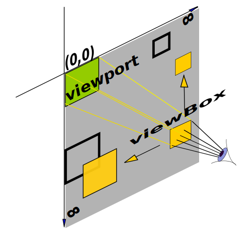

Векторну графіку зберігають у файлах з розширенням .svg. Це звичайні текстові файли, в яких на верхньому рівні знаходиться тег <svg> з набором службових атрибутів, що вказують, в якій версії мови розмітки та за якою версією SVG-специфікації написаний документ. З усіх службових, тільки атрибут xmlns обов'язковий, інші, як правило, пропускають.
<svg version="1.1" xmlns="http://www.w3.org/2000/svg" xmlns:xlink="http://www.w3.org/1999/xlink" xmlns:ev="http://www.w3.org/2001/xml-events" >
<circle r="75" cx="50%" cy="50%" fill="tomato" />
</svg>
Якщо зберегти цей код у зовнішньому файлі, наприклад icon.svg, і додати на веб-сторінку, використовуючи тег <img>, браузер намалює полотно 300x150 пікселів, в центрі якого буде коло.
Цікаво: Якщо явно не поставити розмір, браузер за замовчуванням встановлює розмір елемента 300x150 пікселів. Все що не влізло - буде обрізане.
Вміст SVG-документа малюється на нескінченному полотні і може бути будь-якого розміру, але видима частина полотна відповідає розмірам елемента <svg>. Атрибути width і height задають розмір робочої області перегляду (viewport). Верхній лівий кут області перегляду - це початок координат, де x = 0 і y = 0. За замовчуванням використовуються пікселі, тому зазначення px - зайве.
<svg xmlns="http://www.w3.org/2000/svg" width="400" height="200" style="outline: 2px dashed #2a2a2a;" >
<circle r="75" cx="50%" cy="50%" fill="tomato" />
</svg>
Якщо перекласти «view box», то буквально отримаємо - «вікно перегляду». Тобто це «вікно», через яке можна переглядати певну частину SVG-документа. Щось схоже на вікно ілюмінатора в літаку, через яке ви можете бачити навколишній світ, але viewBox також може масштабувати (наближати або віддаляти) зображення як телескоп.
Атрибут viewBox визначає, яка частина зображення буде відображена, і в якому масштабі.
viewBox="x y width height"
Значення x і y управляють зміщенням щодо початкових координат області перегляду (viewbox) і дозволяють відобразити тільки частину зображення. Значення width і height управляють масштабуванням.
See the Pen lesson-08-svg-viewbox by goit-academy (@goit-academy) on CodePen.
Якщо співвідношення значень атрибутів width і height до їх аналогів у viewBox дорівнює 1:1, зображення буде намальоване в оригінальному розмірі.
<svg width="400" height="200" viewBox="0 0 400 200">
<circle r="75" cx="50%" cy="50%" fill="tomato" />
</svg>
У разі співвідношення 2:1, оригінальне зображення буде збільшено в масштабі рівно у два рази, але розміри елемента залишаться попередніми - 400x200.
<svg width="400" height="200" viewBox="0 0 200 100">
<circle r="75" cx="50%" cy="50%" fill="tomato" />
</svg>
У разі співвідношення 1:2, оригінальне зображення буде зменшено в масштабі рівно у два рази, але розміри елемента залишаться попередніми - 400x200.
<svg width="400" height="200" viewBox="0 0 800 400">
<circle r="75" cx="50%" cy="50%" fill="tomato" />
</svg>
Увага: Тобто viewBox - це «вікно», через яке користувач дивиться на SVG-документ. Його можна перемістити в будь-яке місце SVG-документа, і користувач побачить фрагмент, який знаходиться безпосередньо під viewBox, відповідно до заданого масштабу.